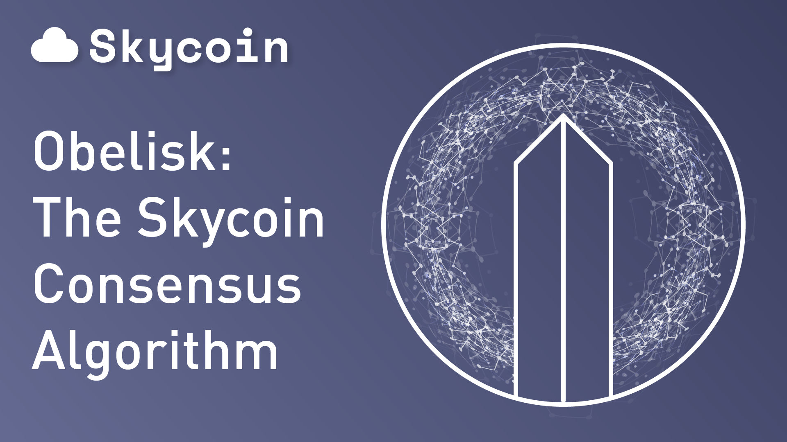

Το blockchain του Skycoin κάνει χρήση ενός νέου τύπου αλγόριθμου συναίνεσης που ονομάζεται “Οβελίσκος” και αντικαθιστά τόσο την απόδειξη εργασίας (“PoW”) όσο και την απόδειξη της συμμετοχής (“PoS”).
Ο στόχος των προγραμματιστών του Skycoin ήταν να διορθώσουν τις σημαντικές αδυναμίες της ασφάλειας και τις “συγκεντρωτικές τάσεις” που συνδέονται με τα δίκτυα blockchain στα οποία η συναίνεση βασίζεται σε αλγόριθμους PoW ή PoS και η δημιουργία κερμάτων συνδέεται με την διαδικασία της εξόρυξης (mining). Εξαιτίας αυτού, το Skycoin προσπαθείνα δημιουργήσει την κρυπτοσυχνότητα την οποία θα ανταποκρίνεται καλύτερα στο αρχικό όραμα του Σάτοσι για ένα πλήρως αποκεντρωμένο ψηφιακό νομισματικό σύστημα.
Με αυτόν τον τρόπο, η τεχνολογία του Skycoin δημιουργεί μία αλυσίδα (blockchain network) χωρίς να απαιτούνται εξορυκτικές δραστηριότητες, έχοντας σταθερές προμήθειες στα κρυπτονομίσματα, χρόνους συναλλαγής των 10 δευτερολέπτων και σαφώς μεγαλύτερη ασφάλεια. Σε ένα σύστημα στο οποίο η σύνδεση μεταξύ της δημιουργίας νομισμάτων και του δικτυακού ελέγχου αποκόπτεται, τα κρυπτονομίσματα χάνουν την πολιτική τους υπόσταση και αρχίζουν να λειτουργούν περισσότερο σαν μια μορφή ψηφιακής ιδιοκτησίας στην πιο ευρύτερη της έννοια.
Η απόδειξη εργασίας (“PoW”) και το σύστημα του Bitcoin
Κατά τον πρώιμο προγραμματισμό του Bitcoin, ένας βασικός υπολογισμός ο οποίος ήταν λανθασμένος, ήταν η διαδικασία εξόρυξης (mining), όπου θα παρήγαγε μια οικονομική δομή με κίνητρα για την προαγωγή και προώθηση της αποκέντρωσης. Στην πραγματικότητα όμως, η σχέση μεταξύ της ομοφωνίας-συναίνεσης και της ενέργειας για την κρυπτογραφική συνάρτηση κατατεμαχισμού (hashing power), ενθαρρύνει συνεχώς την αγορά της αυξανόμενης υπολογιστικής ισχύς ώστε να βρίσκεται σε έλεγχο το δίκτυο.
Για παράδειγμα, το δίκτυο του Bitcoin ελέγχεται απόλυτα από τρεις δεξαμενές εξόρυξης (pools) που κατόρθωσαν να συγκεντρώσουν ένα μεγάλο μέρος της ισχύος που απαιτείται για τις κρυπτογραφικές συναρτήσεις κατατεμαχισμού (hashing power) στους διακομιστές (σερβερ) της. Αυτές οι ομάδες άρχισαν να λειτουργούν ως καρτέλ, χωρίζοντας με συμφωνία, την δύναμη των συναρτήσεων, μεταξύ τους. Η σχέση μεταξύ της εξόρυξης και του ελέγχου του δικτύου αναγνωρίστηκε ήδη από τον Σάτοσι ως την κύρια μη κρυπτογραφική απειλή για τη σταθερότητα του δικτύου. Επιτρέπει σε αυτούς, που συσσωρεύουν την επαρκή ισχύ επεξεργασίας και επιτυγχάνουν το μέγιστο ποσοστό της υπολογιστικής πλειοψηφίας να πλαστογραφήσουν ή να επαναφέρει τις συναλλαγές στο δίκτυο σε μια επίθεση της τάξεως του 51%. Κάποιοι υποστηρίζουν πως αυτή η ευπάθεια έχει γίνει λιγότερο πιεστική σε ένα περιβάλλον όπου η δύναμη κατακερματισμού είναι εξαιρετικά συγκεντρωμένη με φορείς που έχουν επενδύσει μεγάλα ποσά στο Bitcoin και εξαρτώνται για την επιβίωσή τους από την υψηλή αξία του νομίσματος. Ωστόσο, η δύναμη ώστε να επηρεαστεί το δίκτυο εξακολουθεί να είναι πολύ συγκεντρωμένη, νικώντας έτσι τον σκοπό της κατανεμημένης ιδέας των κρυπτονομισμάτων.
Ο αλγόριθμος PoW του δικτύου Bitcoin εισάγει μονοπωλιακά και προβλήματα ασφάλειας τοποθετώντας την εξουσία του δικτύου με αυτόν τον οποίο έχει την ικανότητα να κινητοποιήσει επαρκείς οικονομικούς πόρους ώστε να αποκτήσει τον έλεγχο της εξόρυξης (mining).
Αυτό σημαίνει επίσης ότι η λειτουργία του δικτύου είναι τόσο οικονομικά όσο και περιβαλλοντικά αναποτελεσματική. Η συνεχής εισαγωγή της απαιτούμενης επεξεργαστικής ισχύος για την διαδικασία εξόρυξης καταναλώνει μεγάλες ποσότητες ηλεκτρικής ενέργειας που ισοδυναμούν σε μηνιαία κόστη δεκάδων εκατομμύριων. Αυτά τα έξοδα μπορούν να αντισταθμιστούν μόνο με μία εκθετικά αυξανόμενη εισροή νέων κεφαλαίων παράλληλα με την εισαγωγή νέων χρηστών. Μόνο ένας πολύ μικρός αριθμός νομισμάτων, όπως το Bitcoin και το Ethereum είναι ικανός για την προσέλκυση αρκετών νέων χρηστών ώστε να επιτυχία μια τέτοια συνεχής ροή. Στην περίπτωση των περισσότερων άλλων νομισμάτων PoW / PoS, το κόστος της εξόρυξης PoW / PoS πληρώνεται σε χαμηλότερη αποτίμηση της αγοράς καθώς αφαιρείται το χρήμα από ένα κέρμα από το κόστος εξόρυξης έως ότου εγκαταλείψει το νόμισμα.
Αυτή τη στιγμή η οικονομία του Bitcoin αποτελείται από τους νέους χρήστες που τοποθετούν τα χρήματά τους και στη συνέχεια τα χρήματα αυτά ρίχνονται σε ένα λάκκο και καίγονται σε μια τελετουργική θυσία προς το κόστος εξόρυξης ηλεκτρικής ενέργειας. Αν ο μέσος χρήστης έπρεπε να πληρώσει τους miners, για το κόστος της ηλεκτρικής ενέργειας, άμεσα ως αμοιβή συναλλαγών, αντί να ληστεύεται μέσω του πληθωρισμού με τη δημιουργία νέων κερμάτων, στη συνέχεια κάθε συναλλαγή Bitcoin θα κόστιζε περισσότερο από $50. Θα ήταν ακριβότερη από ένα διεθνή τραπεζική μεταφορά.
Η κεντρική τάση της απόδειξης της συμμετοχής (“PoS”)
Παρόλο που οι αλγόριθμοι Proof of Stake αντιμετωπίζουν το ζήτημα της ασφάλειας με 51% επιθέσεις, είναι αναμφισβήτητα ακόμη πιο ευάλωτοι στον συγκεντρωτισμό από τα δίκτυα PoW. Στα PoS, το μέγεθος των συμμετεχόντων στο δίκτυο οι οποίοι κατέχουν την κρυπτο-εγχειρητικότητα στο δίκτυο, καθορίζουν την εξουσία και κατέχουν την δύναμη της ψήφου για την εφαρμογή των τεχνικών αλλαγών στο δίκτυο. Οι συμμετέχοντες είναι σε θέση να εξορύξουν ένα ισοδύναμο τμήμα του μεριδίου τους ανεξάρτητα από την επεξεργαστική ισχύ.
Το φαινόμενο αυτό, αυξάνει σημαντικά τα οικονομικά εμπόδια για τη δρομολόγηση μίας επίθεσης του 51% επειδή το οικονομικό κόστος απόκτησης της πλειοψηφίας των μαρκών (tokens) στο δίκτυο, είναι πολύ πιθανό να υπερβεί το δυνητικό κέρδος. Αν ένας επιτιθέμενος καταλήγει ως πλειοψηφικός κάτοχος μαρκών στο δίκτυο, θα υποφέρει κυρίως από την επίπτωση της επίθεσης της σταθερότητας του δικτύου ή εξωτερικής αξίας του κρυπτονομίσματος.
Ωστόσο, αν και τα εμπόδια αυξάνονται όσον αφορά τις ανθρωπογενείς επιθέσεις στο δίκτυο, το PoS δημιουργεί μια κεντρική ώθηση η οποία είναι τόσο ισχυρή, αν όχι ισχυρότερη, από την η περίπτωση του PoW. Όπως ο Joseph Young συνοψίζει στη σύγκρισή του για τα δύο συστήματα στο coinfox.info, “Σε ένα σύστημα όπου ο μεγάλος επενδυτής διαθέτει εκτεταμένο έλεγχο και εξουσία, τόσο για τα τεχνικά όσο και για τα οικονομικά θέματα του δικτύου, δημιουργείται έτσι ένα σημαντικό μονοπωλιακό πρόβλημα”. Ενώ στο PoW, η ψηφοφορία για την εφαρμογή των τεχνικών αλλαγών στο δίκτυο “χωρίζεται μεταξύ των miners, των προγραμματιστών και διαφόρων άλλων σημαντικών μελών της κοινότητας”, σε ένα PoS σύστημα, “οι σημαντικότεροι εμπλεκόμενοι φορείς έχουν τεχνική ικανότητα να προβούν σε οποιεσδήποτε αλλαγές, χωρίς να λαμβάνεται υπόψη η βούληση της κοινότητας, των επιχειρήσεων, των miners και των προγραμματιστών. Αυτή η συγκέντρωση της εξουσίας και ουσιαστικά ο έλεγχος του δικτύου, καταστρέφει το σκοπό της αποκέντρωσης των κρυπτονομισμάτων δεδομένου ότι αντιφάσκει με την όλη αρχή της διανομής όλων των στοιχείων εντός του δικτύου για να αποφευχθεί η παρουσία μιας κεντρικής αρχής. “
Οβελίσκος: Ο συναινετικός αλγόριθμος διανομής του Skycoin
Για να αντιμετωπίσει το πρόβλημα του συγκεντρωτισμού, το Skycoin κινείται πέρα από το PoW / PoS. Χρησιμοποιεί έναν κατανεμημένο αλγόριθμο συναίνεσης, που ονομάζεται Obelisk, ο οποίος διανέμει επιρροή στο δίκτυο σύμφωνα με έναν “ιστό εμπιστοσύνης”. Στην ουσία, κάθε κόμβος έχει μια λίστα με άλλους κόμβους στους οποίους είναι συνδρομητής και η πυκνότητα του δικτύου συνδρομητών ενός κόμβου, καθορίζει την επιρροή του στο δίκτυο. Ο κάθε κόμβος έχει εκχωρηθεί ως ένα προσωπικό μπλοκ αλυσίδας που λειτουργεί ως ένα “κοινό” κανάλι εκπομπής στο οποίο είναι ορατές όλες οι ενέργειες του κόμβου και των δημόσιων εγγραφών. Καθώς όλες οι αποφάσεις για συναίνεση όπως και η επικοινωνία, πραγματοποιούνται μέσω των προσωπικών blockchains του κάθε κόμβου, η κοινότητα εύκολα μπορεί να ελέγξει τους κόμβους για εξαπάτηση ή συμπαιγνία. Το πως παίρνονται οι αποφάσεις στο δίκτυο και ποιοι κόμβοι επηρεάζονται από αυτές τις αποφάσεις, πραγματοποιείται με απόλυτη διαφάνεια.
Το δημόσιο αρχείο που παραμένει από το προσωπικό μπλοκ αλυσίδας (blockchain) του κάθε κόμβου, επιτρέπει στο δίκτυο να αντιδρά στις επιθέσεις, αποσυνδέοντας τις συνδέσεις που είναι λιγότερο αξιόπιστες ή έχουν θεωρηθεί κακόβουλες, αναθέτοντας έτσι το δίκτυο σε έναν μικρότερο και πυκνότερο πυρήνα από αξιόπιστους κόμβους. Ως εκ τούτου, εάν η κοινότητα δεν διαθέτει εμπιστοσύνη στους κόμβους που τις αντιπροσωπεύει ή αισθάνεται ότι η ισχύς στο δίκτυο είναι πολύ συγκεντρωμένη (ή όχι αρκετά συγκεντρωμένη), η κοινότητα είναι σε θέση να μετατοπίσει συλλογικά την ισορροπία της εξουσίας στο δίκτυο αλλάζοντας συλλογικά την εμπιστοσύνη τους στα μέλη του δικτύου. Η λογοδοσία των κόμβων στην κοινότητα, οι έλεγχοι από τρίτες μεριές καθώς και η διαφάνεια της συναίνεσης ενισχύονται για την συλλογική λήψη αποφάσεων και εισάγουν έτσι ένα ιδιαίτερα δημοκρατικό και αποκεντρωτικό στοιχείο μέσα στο δίκτυο.
Το σύστημα αυτό προβλέπει ένα σύστημα ψηφιακού νομίσματος με σημαντικά μειωμένους χρόνους συναλλαγών και μεγαλύτερη ασφάλεια.
Διαβάστε ακόμη: